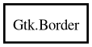

Gtk.Border – gtk+-3.0 Reference Manual
Packages
gtk+-3.0
Gtk
Border
copy
free
bottom
left
right
top
Border
Object Hierarchy:

Description:
[
CCode
( copy_function =
"g_boxed_copy"
, free_function =
"g_boxed_free"
, type_id =
"gtk_border_get_type ()"
) ]
public
struct
Border
Namespace:
Gtk
Package:
gtk+-3.0
Content:
Methods:
public
Border
?
copy
()
public
void
free
()
Fields:
public
int16
left
public
int16
right
public
int16
top
public
int16
bottom